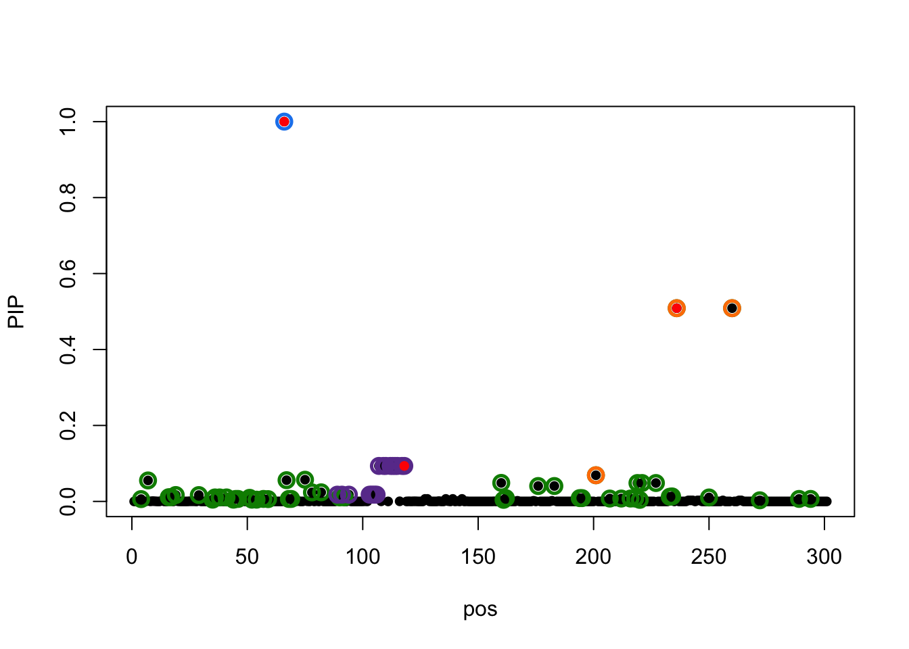
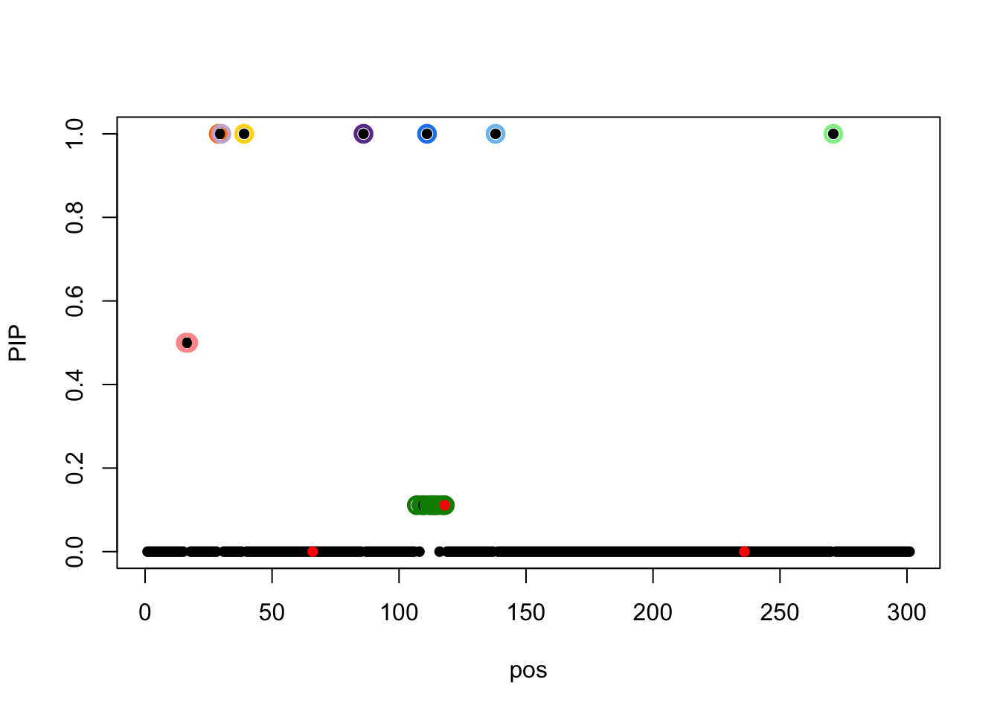
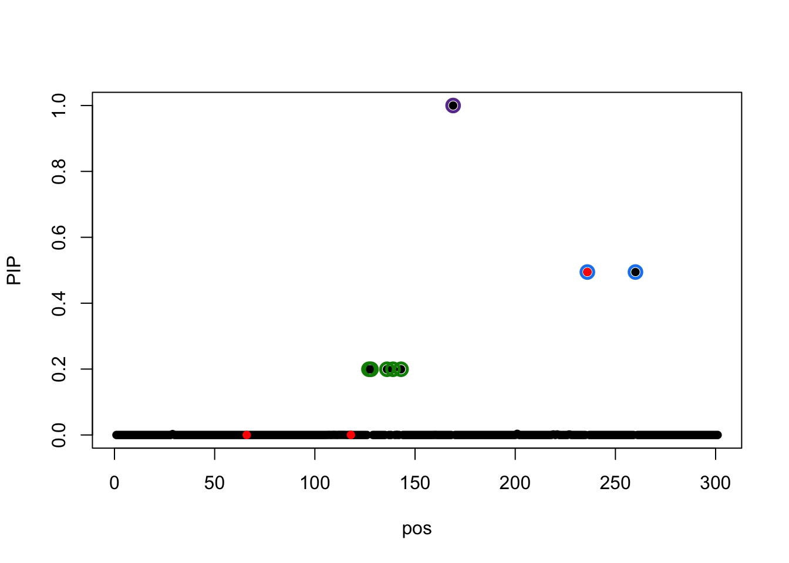
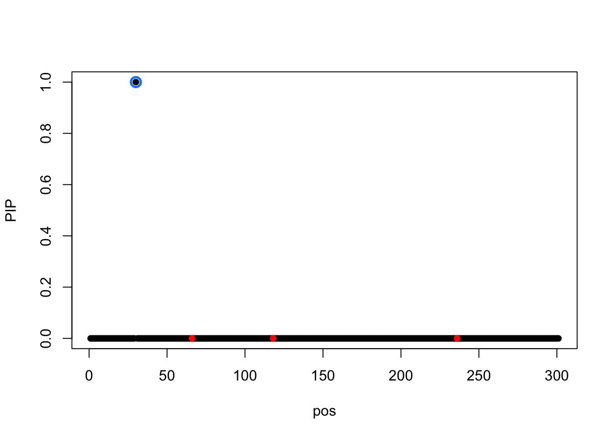
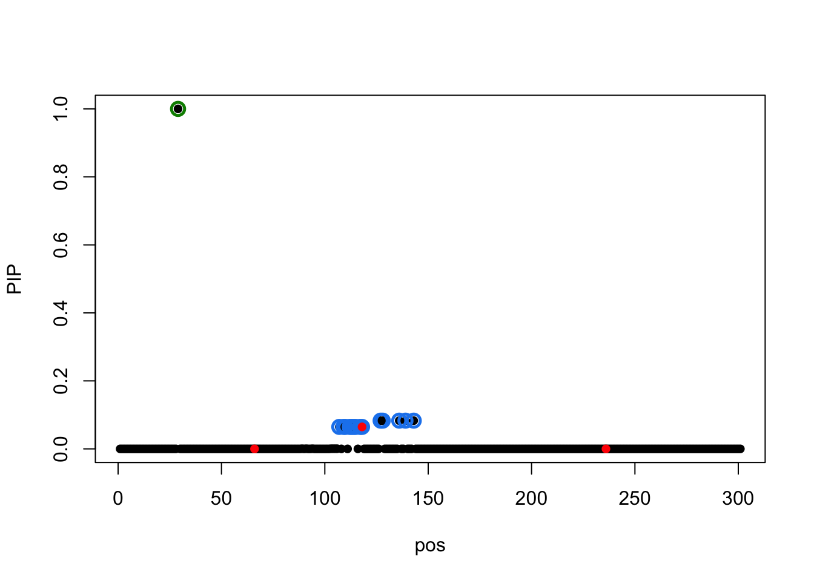
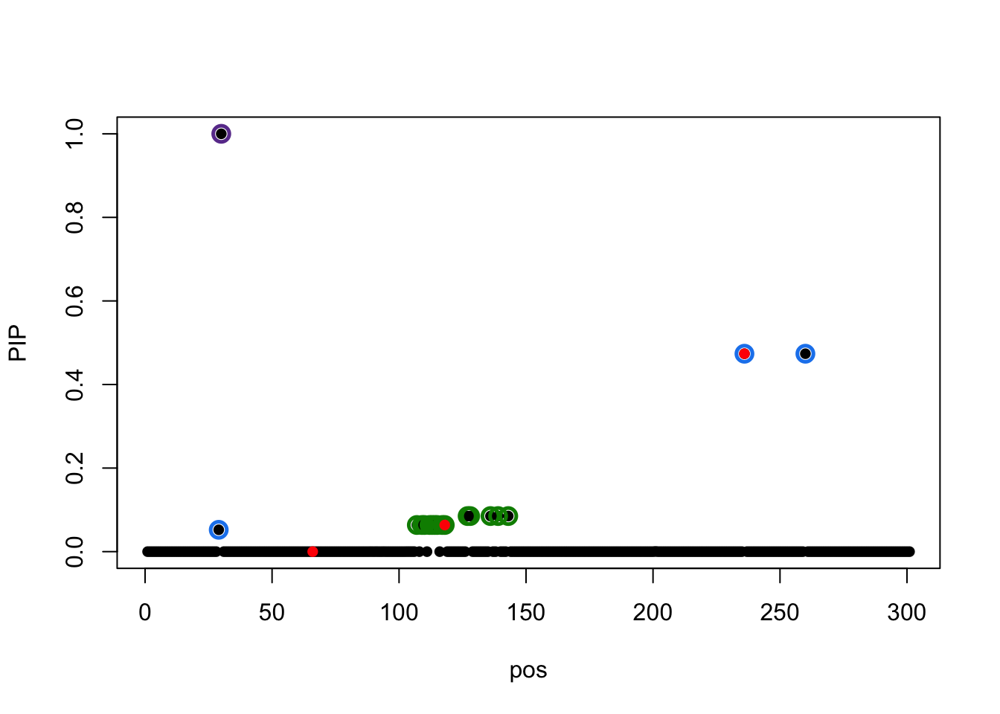
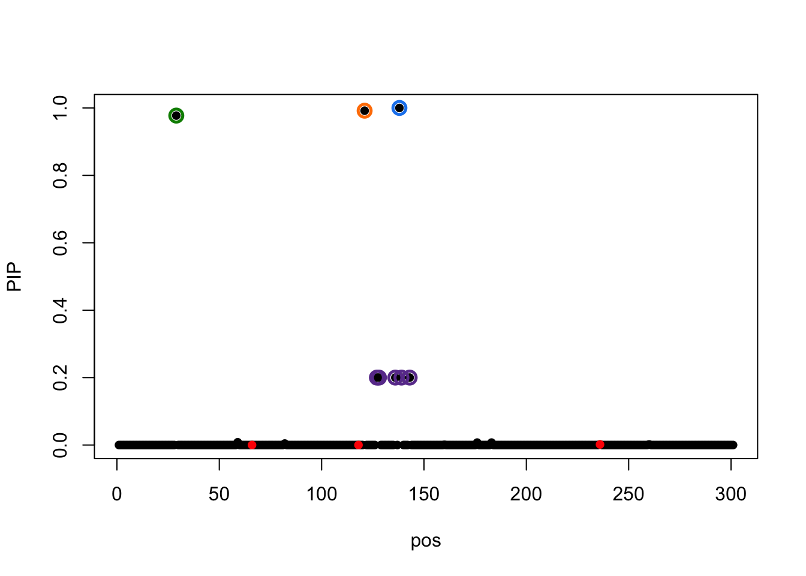

RSS problem data 1
Yuxin Zou
7/11/2020
Last updated: 2020-07-12
Checks: 7 0
Knit directory: mmbr-rss-dsc/
This reproducible R Markdown analysis was created with workflowr (version 1.6.1). The Checks tab describes the reproducibility checks that were applied when the results were created. The Past versions tab lists the development history.
Great! Since the R Markdown file has been committed to the Git repository, you know the exact version of the code that produced these results.
Great job! The global environment was empty. Objects defined in the global environment can affect the analysis in your R Markdown file in unknown ways. For reproduciblity it’s best to always run the code in an empty environment.
The command set.seed(20200227) was run prior to running the code in the R Markdown file. Setting a seed ensures that any results that rely on randomness, e.g. subsampling or permutations, are reproducible.
Great job! Recording the operating system, R version, and package versions is critical for reproducibility.
Nice! There were no cached chunks for this analysis, so you can be confident that you successfully produced the results during this run.
Great job! Using relative paths to the files within your workflowr project makes it easier to run your code on other machines.
Great! You are using Git for version control. Tracking code development and connecting the code version to the results is critical for reproducibility.
The results in this page were generated with repository version 207e289. See the Past versions tab to see a history of the changes made to the R Markdown and HTML files.
Note that you need to be careful to ensure that all relevant files for the analysis have been committed to Git prior to generating the results (you can use wflow_publish or wflow_git_commit). workflowr only checks the R Markdown file, but you know if there are other scripts or data files that it depends on. Below is the status of the Git repository when the results were generated:
Ignored files:
Ignored: .Rhistory
Ignored: .Rproj.user/
Untracked files:
Untracked: analysis/mmbr_missing_rss_problem2.Rmd
Untracked: output/mnm_missing_output.20200527.rds
Note that any generated files, e.g. HTML, png, CSS, etc., are not included in this status report because it is ok for generated content to have uncommitted changes.
These are the previous versions of the repository in which changes were made to the R Markdown (analysis/mmbr_missing_rss_problem1.Rmd) and HTML (docs/mmbr_missing_rss_problem1.html) files. If you’ve configured a remote Git repository (see ?wflow_git_remote), click on the hyperlinks in the table below to view the files as they were in that past version.
| File | Version | Author | Date | Message |
|---|---|---|---|---|
| Rmd | 207e289 | zouyuxin | 2020-07-12 | wflow_publish(“analysis/mmbr_missing_rss_problem1.Rmd”) |
There are 3 causals in this dataset.
library(mmbr)Loading required package: mashrLoading required package: ashrLoading required package: susieRX = readRDS('data/tiny_data_211.rds')
simu = readRDS('data/tiny_data_211_artificial_mixture_small_missing_2.rds')
b = simu$meta$true_coef
Z = simu$sumstats$bhat/simu$sumstats$sbhat
r = X$ld
prior = simu$meta$prior[["oracle"]]
resid_Z <- simu$meta$residual_variance
xUlist = prior$xUlist
m_init = mmbr::create_mash_prior(mixture_prior = list(matrices=xUlist, weights=prior$pi), null_weight=prior$null_weight, max_mixture_len=-1)The total PVE for each condition is
0.15 * apply(b, 2, function(x) length(which(x!=0)))[1] 0.45 0.45 0.45 0.45 0.45 0.45Per SNP PVE is 0.15, wihch is a little high, this may violate the RSS model assumption.
The true effects are at 66, 118, 236.
b[which(rowSums(b!=0) !=0),] [,1] [,2] [,3] [,4] [,5] [,6]
[1,] -0.3035921 -0.2908241 -0.2994736 -0.1908300 -0.2017544 -0.1975710
[2,] -0.1937902 -0.1856402 -0.1911614 0.6300627 0.6661316 0.6523192
[3,] 0.5045199 0.4833015 0.4976756 0.1251191 0.1322817 0.1295388The Z scores at causal are
Z[which(rowSums(b!=0) !=0),] [,1] [,2] [,3] [,4] [,5]
chr17_63685825_T_C_b38 -19.480618 -19.860108 -20.572077 2.794769 -0.1586339
chr17_63725018_T_C_b38 -3.559522 -3.312576 -3.305975 22.768102 18.8988759
chr17_63787427_T_C_b38 16.611026 17.091197 18.511811 16.306786 16.1479848
[,6]
chr17_63685825_T_C_b38 2.410974
chr17_63725018_T_C_b38 22.836100
chr17_63787427_T_C_b38 16.596153The model with individual level is
m_init = mmbr::create_mash_prior(mixture_prior = list(matrices=xUlist, weights=prior$pi), null_weight=prior$null_weight, max_mixture_len=-1)
result0 = mmbr::msusie(X$X, simu$Y, L = 10,
prior_variance=m_init, residual_variance=resid_Z,
compute_objective=T, estimate_residual_variance=F,
estimate_prior_variance=T, estimate_prior_method='EM',
precompute_covariances=T, n_thread=1, max_iter=1000)
susie_plot(result0,y='PIP',b=b)
The model using summary data is
result = mmbr::msusie_rss(Z, r, L=10,
prior_variance=m_init, residual_variance=resid_Z,
compute_objective=TRUE, estimate_residual_variance=F,
estimate_prior_variance=T, estimate_prior_method='EM',
precompute_covariances=T, n_thread=1, max_iter=1000, track_fit = T)
susie_plot(result,y='PIP',b=b) There is only one CS containing causal, the rest 8 CSs are all false discoveries.
Change residual variance to residual correlation matrix (encourage conservative),
result.cor = mmbr::msusie_rss(Z, r, L=10,
prior_variance=m_init, residual_variance=cov2cor(resid_Z),
compute_objective=TRUE, estimate_residual_variance=F,
estimate_prior_variance=T, estimate_prior_method='EM',
precompute_covariances=T, n_thread=1, max_iter=1000, track_fit = T)
susie_plot(result.cor,y='PIP',b=b) None if CS contain signal, but the elbo is higher (-1.437544810^{4} vs -2.55880110^{4}).
None if CS contain signal, but the elbo is higher (-1.437544810^{4} vs -2.55880110^{4}).
Try initialize at truth:
init_true = list()
init_true$b1 = array(0, dim = c(3,301,6))
init_true$b1[1,66,] = (b[66,]/sqrt(diag(resid_Z))) * sqrt(837)
init_true$b1[2,118,] = (b[118,]/sqrt(diag(resid_Z))) * sqrt(837)
init_true$b1[3,236,] = (b[236,]/sqrt(diag(resid_Z))) * sqrt(837)
init_true$alpha = matrix(0, 3, 301)
init_true$alpha[1,66] = 1
init_true$alpha[2,118] = 1
init_true$alpha[3,236] = 1
result.init.true = msusie_rss(Z, r, L=3, s_init = init_true,
prior_variance=m_init, residual_variance=resid_Z,
compute_objective=TRUE, estimate_residual_variance=F,
estimate_prior_variance=T, estimate_prior_method='EM',
precompute_covariances=T, n_thread=1, max_iter=1000,track_fit=T)
susie_plot(result.init.true, y='PIP',b=b)
L = 1:
result.1 = mmbr::msusie_rss(Z, r, L=1,
prior_variance=m_init, residual_variance=resid_Z,
compute_objective=TRUE, estimate_residual_variance=F,
estimate_prior_variance=T, estimate_prior_method='EM',
precompute_covariances=T, n_thread=1, max_iter=1000, track_fit = T)
susie_plot(result.1,y='PIP',b=b) The correlation between SNP 30 and causal 236 is 0.8596009.
L = 2:
result.2 = mmbr::msusie_rss(Z, r, L=2,
prior_variance=m_init, residual_variance=resid_Z,
compute_objective=TRUE, estimate_residual_variance=F,
estimate_prior_variance=T, estimate_prior_method='EM',
precompute_covariances=T, n_thread=1, max_iter=1000, track_fit = T)
susie_plot(result.2,y='PIP',b=b)
L = 3:
result.3 = mmbr::msusie_rss(Z, r, L=3,
prior_variance=m_init, residual_variance=resid_Z,
compute_objective=TRUE, estimate_residual_variance=F,
estimate_prior_variance=T, estimate_prior_method='EM',
precompute_covariances=T, n_thread=1, max_iter=1000, track_fit = T)
susie_plot(result.3,y='PIP',b=b)
result.3$sets$cs
$cs$L1
[1] 30
$cs$L2
[1] 107 109 110 112 113 114 115 117 118 127 128 136 139 143
$cs$L3
[1] 29 236 260
$purity
min.abs.corr mean.abs.corr median.abs.corr
L1 1.0000000 1.0000000 1
L2 0.9974277 0.9988188 1
L3 0.9745019 0.9886675 1
$cs_index
[1] 1 2 3
$coverage
[1] 0.95Correlation between CS1 and CS3 is
r[30, c(29,236,260)]chr17_63645770_AACAGCATGTC_A_b38 chr17_63787427_T_C_b38
0.8655952 0.8596009
chr17_63801302_G_A_b38
0.8596009 L = 4:
result.4 = mmbr::msusie_rss(Z, r, L=4,
prior_variance=m_init, residual_variance=resid_Z,
compute_objective=TRUE, estimate_residual_variance=F,
estimate_prior_variance=T, estimate_prior_method='EM',
precompute_covariances=T, n_thread=1, max_iter=1000, track_fit = T)
susie_plot(result.4,y='PIP',b=b)
sessionInfo()R version 3.6.3 (2020-02-29)
Platform: x86_64-apple-darwin15.6.0 (64-bit)
Running under: macOS Catalina 10.15.5
Matrix products: default
BLAS: /Library/Frameworks/R.framework/Versions/3.6/Resources/lib/libRblas.0.dylib
LAPACK: /Library/Frameworks/R.framework/Versions/3.6/Resources/lib/libRlapack.dylib
locale:
[1] en_US.UTF-8/en_US.UTF-8/en_US.UTF-8/C/en_US.UTF-8/en_US.UTF-8
attached base packages:
[1] stats graphics grDevices utils datasets methods base
other attached packages:
[1] mmbr_0.0.1.0305 susieR_0.9.1.0 mashr_0.2.40 ashr_2.2-50
[5] workflowr_1.6.1
loaded via a namespace (and not attached):
[1] Rcpp_1.0.5 compiler_3.6.3 later_1.0.0 git2r_0.26.1
[5] plyr_1.8.6 prettyunits_1.1.1 progress_1.2.2 tools_3.6.3
[9] digest_0.6.25 evaluate_0.14 lattice_0.20-41 pkgconfig_2.0.3
[13] rlang_0.4.6 Matrix_1.2-18 yaml_2.2.1 mvtnorm_1.1-1
[17] xfun_0.13 invgamma_1.1 stringr_1.4.0 knitr_1.28
[21] vctrs_0.3.1 hms_0.5.3 fs_1.4.1 rprojroot_1.3-2
[25] grid_3.6.3 glue_1.4.1 R6_2.4.1 rmarkdown_2.1
[29] mixsqp_0.3-44 irlba_2.3.3 rmeta_3.0 magrittr_1.5
[33] whisker_0.4 matrixStats_0.56.0 backports_1.1.6 promises_1.1.0
[37] htmltools_0.4.0 abind_1.4-5 assertthat_0.2.1 httpuv_1.5.2
[41] stringi_1.4.6 truncnorm_1.0-8 SQUAREM_2020.3 crayon_1.3.4